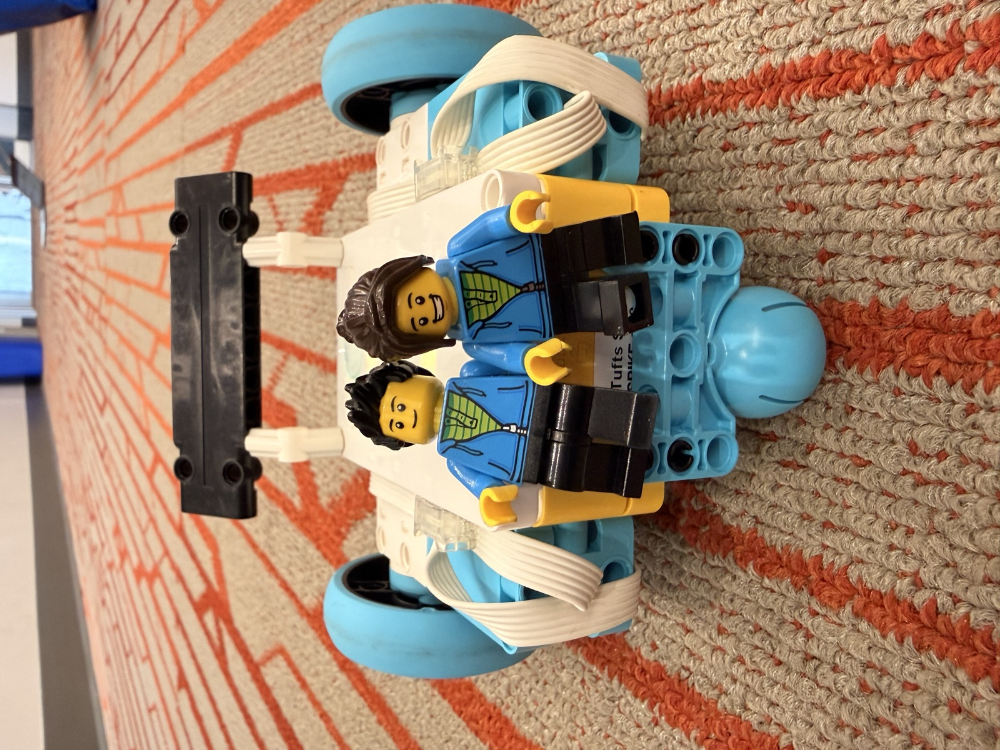
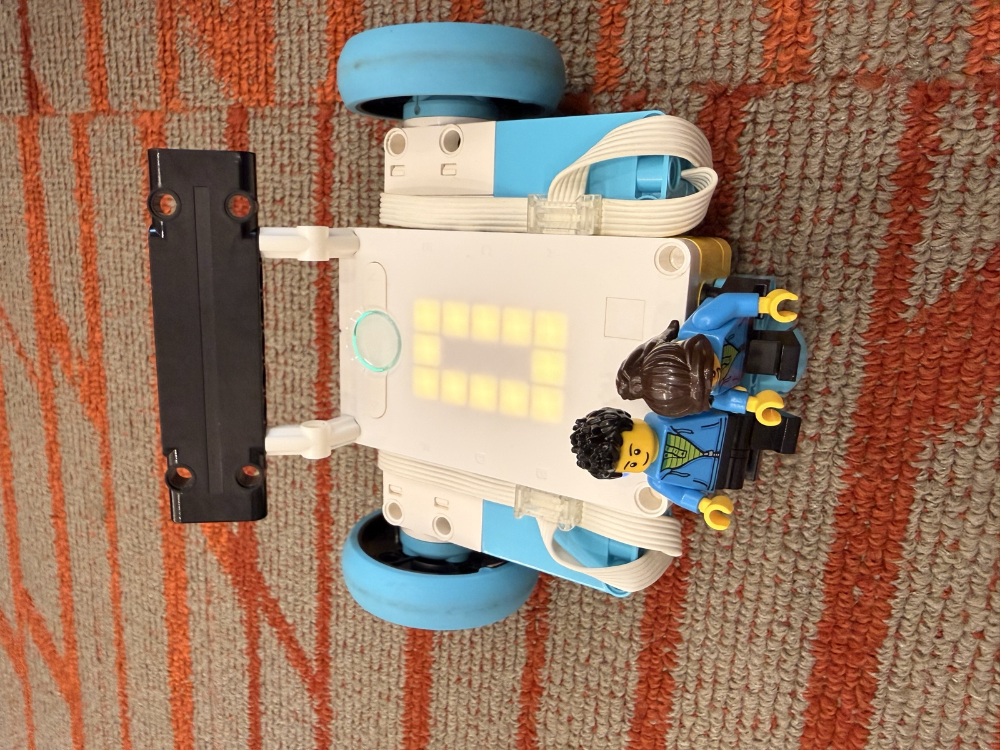
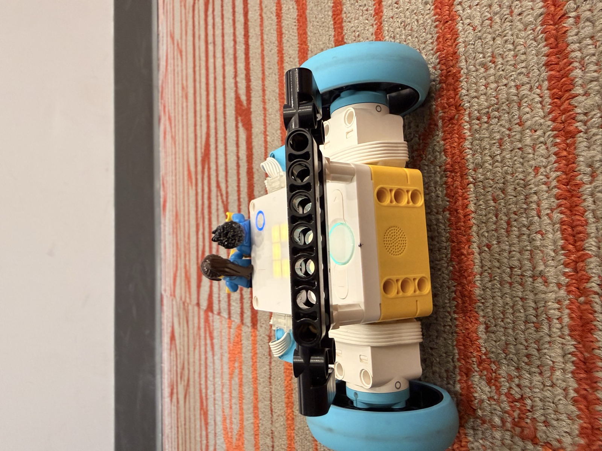

04 M — Sheet 09 / 10
Build a sturdy car with as few pieces as possible — forward, backward, and spin.

Build a sturdy car with as few pieces as possible, and it has to drive forward, backward, and spin. The card asks which connections actually hold, and what you can leave off to cut the part count.
The driving task was the full set: fast and slow forward, fast and slow backward, a small arc and a big arc, and spinning on its own axis slow and then fast.
There's barely any car beyond the kit. The hub is chassis and body at the same time, the motors mount straight onto its sides with the wheels on their own axles, and a ball caster under the nose is the third point on the ground. The cables wrap around the motors so nothing trails. The spoiler and the two riders are the only parts not doing structural work.


The challenge was a drop test: knee height, does it come apart. I took the two riders off first and the car survived in one piece.
The code runs everything with the motors paired, so each maneuver is one move_tank call: two wheel speeds and a time. Equal speeds go straight, negative goes backward, unequal curves toward the slower wheel (bigger difference, tighter turn), and opposite speeds spin it in place.
# Hardware setup: left drive motor on port A, right drive motor on port B.
# The front ball wheel rolls freely.
from hub import port
import runloop
import motor_pair
# Each motion lasts 4 seconds (4000 milliseconds).
ACTION_TIME_MS = 4000
# Motor speeds are in degrees per second.
FAST_SPEED = 700
SLOW_SPEED = 250
SPIN_SPEED = 400
async def main():
# Pair the left and right drive motors.
motor_pair.pair(motor_pair.PAIR_1, port.A, port.B)
# 1. Drive forward fast.
await motor_pair.move_tank_for_time(
motor_pair.PAIR_1, FAST_SPEED, FAST_SPEED, ACTION_TIME_MS
)
# 2. Drive forward slowly.
await motor_pair.move_tank_for_time(
motor_pair.PAIR_1, SLOW_SPEED, SLOW_SPEED, ACTION_TIME_MS
)
# 3. Drive backward fast.
await motor_pair.move_tank_for_time(
motor_pair.PAIR_1, -FAST_SPEED, -FAST_SPEED, ACTION_TIME_MS
)
# 4. Drive backward slowly.
await motor_pair.move_tank_for_time(
motor_pair.PAIR_1, -SLOW_SPEED, -SLOW_SPEED, ACTION_TIME_MS
)
# 5. Make a small left arc: both wheels go forward; right is slightly faster.
await motor_pair.move_tank_for_time(
motor_pair.PAIR_1, 300, 400, ACTION_TIME_MS
)
# 6. Make a medium left arc: both wheels go forward; right is much faster.
await motor_pair.move_tank_for_time(
motor_pair.PAIR_1, 200, 500, ACTION_TIME_MS
)
# 7. Make a small right arc: both wheels go forward; left is slightly faster.
await motor_pair.move_tank_for_time(
motor_pair.PAIR_1, 400, 300, ACTION_TIME_MS
)
# 8. Make a medium right arc: both wheels go forward; left is much faster.
await motor_pair.move_tank_for_time(
motor_pair.PAIR_1, 500, 200, ACTION_TIME_MS
)
# 9. Spin clockwise: left wheel forward, right wheel backward.
await motor_pair.move_tank_for_time(
motor_pair.PAIR_1, SPIN_SPEED, -SPIN_SPEED, ACTION_TIME_MS
)
# 10. Spin counterclockwise: left wheel backward, right wheel forward.
await motor_pair.move_tank_for_time(
motor_pair.PAIR_1, -SPIN_SPEED, SPIN_SPEED, ACTION_TIME_MS
)
# Free the motor ports when all motions are finished.
motor_pair.unpair(motor_pair.PAIR_1)
# Start the program.
runloop.run(main())